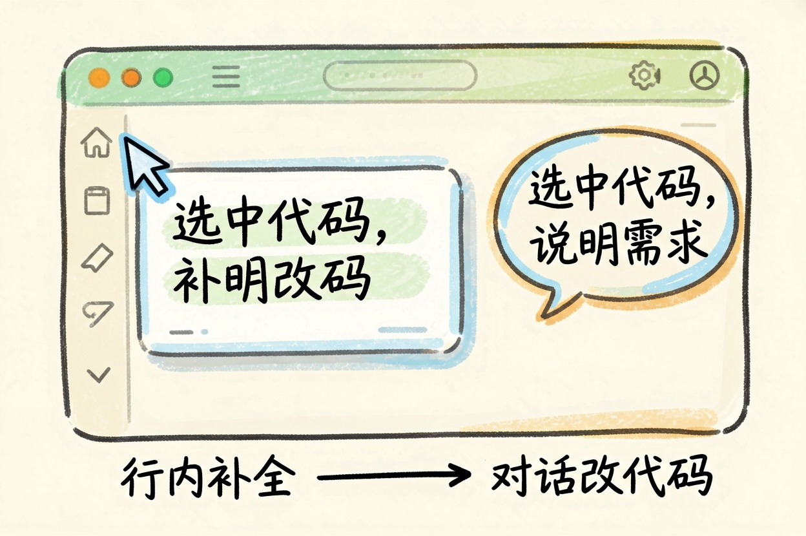
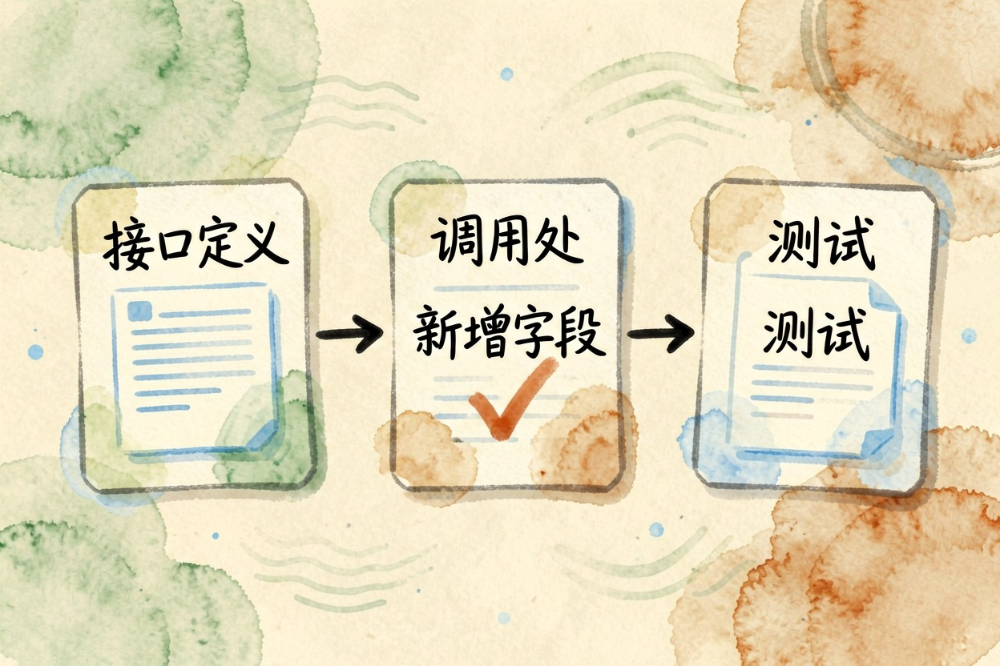
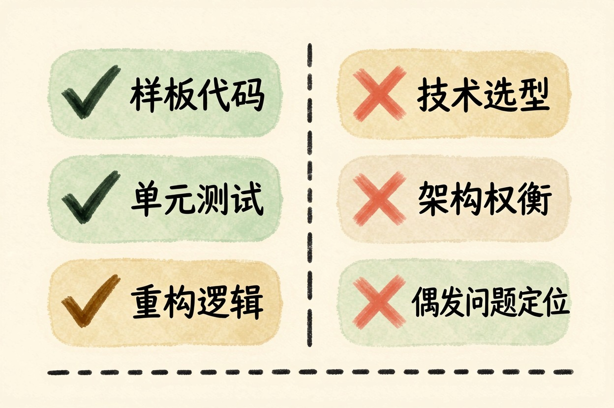

Trae 好用吗？国产 AI 编程工具的实际体验 — Learntide
编辑器换来换去很折腾，装之前最该问的一句是：它到底能替我省掉哪几步重复劳动。
trae好用吗：先给一句结论

trae好用吗？先说结论：写样板代码、改小需求、读陌生项目，它能实打实帮上忙；架构怎么定、性能瓶颈在哪，还得你自己扛。
它的形态是一个带 AI 的编辑器，界面和快捷键沿用主流习惯，从别的 IDE 迁过来几乎不用重学。
值得单说的是中文交互。用中文描述需求，它理解得比较到位，术语也不会乱翻，这一点对国内团队很实际。
补全与对话改代码的手感

行内补全的节奏还算跟手。写函数名、补参数、接着往下续几行，命中率在可用范围内。
真正拉开差距的是对话改代码。选中一段说清要改成什么样，它直接给出改动，你逐处确认。比复制到聊天框再贴回来省事不少。
想让它改得准，指令要具体。
选中 src/api/order.ts 里的 createOrder 函数后，这样说：
把这个函数改成支持批量下单：入参从单个 order 改为 orders 数组，
保留原有的参数校验逻辑，校验失败时收集所有错误一次性抛出，
不要吞异常。返回值改为 { success: [], failed: [] } 结构。
另外：只改这个函数和它的类型定义，其他文件先不要动。最后那句限制很有用。不写清范围，它容易顺手改一片。
还有个小习惯值得养成：补全弹出来先读一眼再回车。整段闭眼接受，回头排查花的时间比省下的还多。
项目级改动与中文交互

跨文件的活儿是分水岭。让它加一个字段，从接口定义到调用处再到测试，能不能一路跟下去，直接决定你省不省心。
实测的感受是：文件数不多、结构清楚的项目里跟得住；老项目里目录乱、命名飘，它同样会漏。
所以别一次给太大的任务。拆成能一眼看完的改动，逐个确认，返工反而更少。
模型选择也是个变量。同一句指令换个模型，产出的差别不小，遇到啃不动的改动可以换一个再试。
它接得住什么，接不住什么
接得住的：样板代码、数据结构转换、写单元测试、把一段逻辑重构得更清楚、给陌生代码逐段讲解。
接不住的：技术选型、跨模块的架构权衡、线上偶发问题的定位。这些依赖上线背景和历史包袱，它看不到。
还有一类要当心。它对不熟的库会编出看着合理的接口名，跑起来才报错。用之前查一眼官方文档，比事后翻报错快。
谁适合现在装一个试试
新手值得试。读代码时随时能问，学习曲线平缓不少，但要逼自己看懂每处改动，别养成直接合入的习惯。
老手把它当加速器。重复劳动交出去，判断权留在自己手里。
团队要先定规矩：哪些仓库能接、生成的代码怎么评审、额度怎么分。成本敏感的话，可以顺带看大模型 API 省钱那篇；对数据外发有顾虑的，本地大模型够用吗那篇里有替代思路。
更多同类产品在 AI 工具导航里能翻到。trae好用吗这个问题，最后还是得拿你自己的项目跑一周才有答案。
本文信息核对于 2026-08-08。AI 产品的价格、免费额度与功能变动频繁，实际以各工具官网当前说明为准。